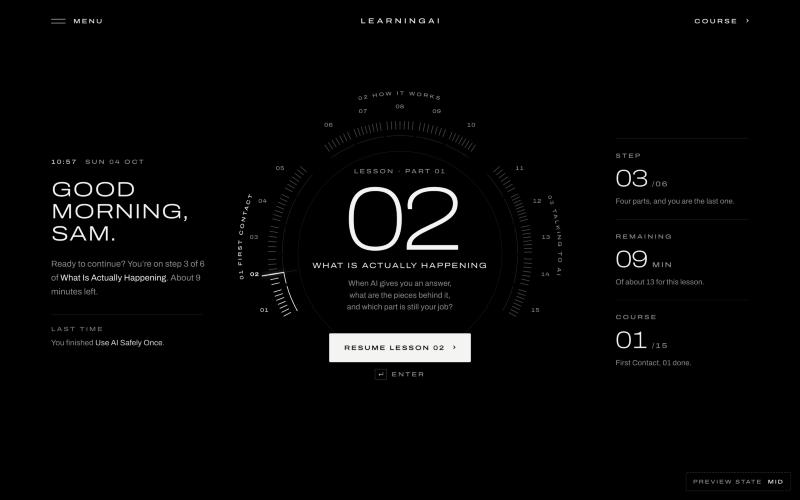

LearningAI · Home · three directions
Three complete concepts for the signed-in Home, built on the real lessons. Each one is personal and time-aware, works on phones, and has a small “design review” switch in the corner so you can flip between signed out, new, mid-course, late and finished.
Home as a luxury magazine cover. Your current lesson is the cover story; a dateline reads “Sunday morning · For Sam · Issue 02 of 15”.

Home as a hypercar instrument cluster. One gauge holds every step of the course; the needle sits on where you stopped and sweeps on load.
Home does the work. After a short greeting it asks your lesson’s real question, and your first answer carries you into the lesson.
Cover (B) as the base, with Invitation’s (C) inline answer in the question area: you see the cover story, and you can start the lesson by answering right there.
Cockpit (A) is the most striking, but it reads as a dashboard. Its gauge would work well on a dedicated progress screen instead.
Concepts are design prototypes: menus in them don’t open, and their links point at the main site’s routes. Pick one (or a mix) and it gets built into the full site.